codly.callout-config
Describes a content row attached to a source line in a code block. Use it in the callouts field of codly.new.
Signature
codly.callout-config(line: int, body: content, align: auto, breakable: auto, inset: auto, fill: auto, stroke: auto, source-indent: auto, placement: auto, bubble-gap: auto, pointer: auto, pointer-align: auto, pointer-size: auto, pointer-height: auto, pointer-width: auto, pointer-offset: auto, bubble-align: auto, bubble-fill: auto, bubble-stroke: auto, bubble-inset: auto, bubble-outset: auto, bubble-radius: auto, bubble-width: auto)All fields are named. A dictionary with line and body keys can also be used as a callout entry.
Fields
| Field | Type | Default / required | Meaning |
|---|---|---|---|
line |
int |
Required | One-indexed source line to attach the callout to; must be greater than zero. |
body |
content |
Required | Content displayed in the callout row. |
align |
alignment | auto | none |
auto |
Alignment of the callout cell; auto inherits the element setting. |
breakable |
bool | auto | none |
auto |
Whether the cell may break across pages; auto inherits the element setting. |
inset |
length | dictionary | auto | none |
auto |
Callout cell inset; auto inherits the element setting. |
fill |
paint | auto | none |
auto |
Callout cell fill; auto inherits the element setting. |
stroke |
stroke | auto | none |
auto |
Callout cell stroke; auto inherits the element setting. |
source-indent |
bool | auto |
auto |
Aligns a plain callout with its source indentation while reserving gutter columns. Pointed bubbles remain anchored to their character. |
placement |
"above" | "below" | auto |
auto |
Side of the source line for the row or bubble. |
bubble-gap |
length | dictionary | auto |
auto |
Minimum distance between neighboring bubbles; use a length for both axes or (x: length, y: length). |
pointer |
int | none | auto |
auto |
Character anchor in the source line: one-indexed, with 0 at line start. none disables the bubble. |
pointer-align |
"start" | "center" | "end" | auto |
auto |
Preferred bubble alignment around its source character; placement clamps it to the row. |
pointer-size |
length | auto |
auto |
Arrow height and half of its base width. |
pointer-height |
length | auto |
auto |
Arrow height; auto uses pointer-size. |
pointer-width |
length | auto |
auto |
Full arrow base width; auto uses twice pointer-size. |
pointer-offset |
length | auto |
auto |
Horizontal shift of the arrow tip from the character anchor; positive is right, negative is left, and the tip is clamped to the bubble. |
bubble-align |
alignment | auto |
auto |
Alignment of bubble content, independent of callout cell alignment. |
bubble-fill |
paint | none | auto |
auto |
Fill shared by the bubble and arrow. |
bubble-stroke |
stroke | none | auto |
auto |
The bubble's single outline. |
bubble-inset |
length | dictionary | auto |
auto |
Padding inside the bubble. |
bubble-outset |
length | dictionary | auto |
auto |
Extra paint extent around the padded body, reserved in the row. |
bubble-radius |
length | auto |
auto |
Bubble corner radius. |
bubble-width |
length | ratio | auto |
auto |
Preferred padded body width; auto fits content, bounded by the available row. |
Behavior
An entry’s auto style values inherit from codly.callout; bubble styles can then inherit from codly.bubble. Explicit entry values take precedence. Cell fill and stroke accept none to disable painting. A pointed bubble uses one shared outline and paint for its body and arrow, and wraps its content at the available width.
Pointer positions count characters in the source line after a diff marker is removed; unlike highlight bounds, they are one-indexed, with zero denoting the start. The pointer follows the rendered character when source text wraps. Consecutive bubbles on the same side with matching cell styles share a row when their outlines fit; overlaps use another lane in declaration order.
Negative pointer positions, dimensions, insets, outsets, and gaps are invalid. bubble-gap dictionaries accept only x and y, whose omitted values default to 0.5em.
Example: Basic Usage
#import "@preview/codly:2.0.0" as codly
#codly.new(
```py
if ready:
start()
```,
callouts: (
codly.callout-config(
line: 2,
pointer: 5,
body: [This call runs when the input is ready.],
bubble-width: bubble-width,
bubble-fill: aqua.lighten(80%),
),
),
)Edit & run on your device
The controls supply the example variables. Their definitions are hidden here; Copy code includes the current values and your edits.
